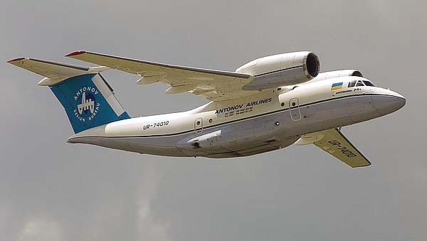
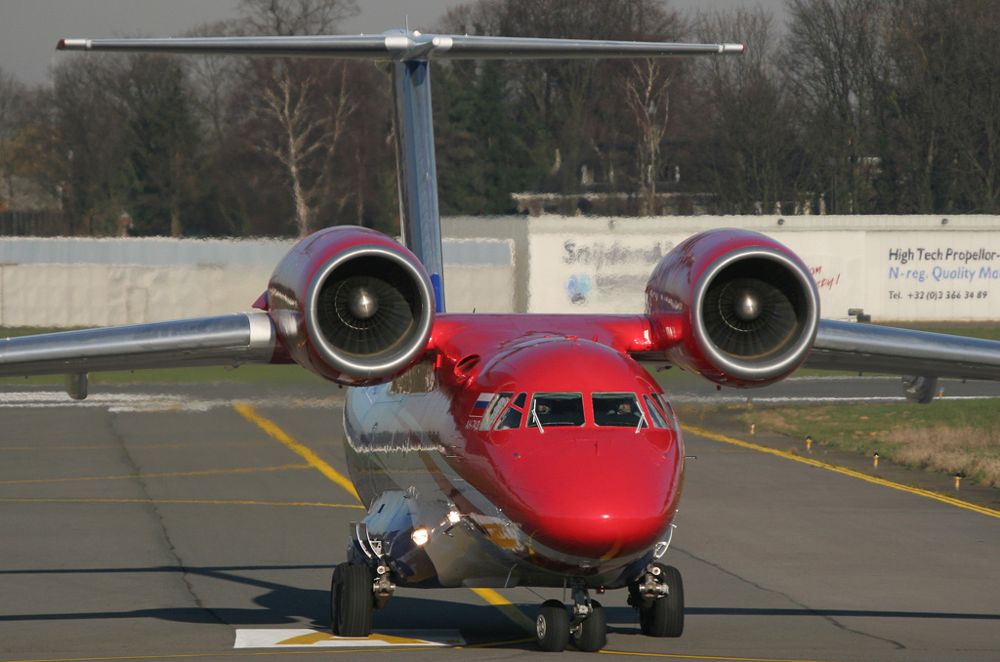

Ан-74 — модифікація радянського транспортного літака Ан-72 для застосування в умовах крайньої Півночі, створений в АНТК імені О. К. Антонова.
Ан-74 є близькомагістральним транспортним літаком, розробленим АНТК імені О. К. Антонова (СРСР).
Ан-74 створено для експлуатації в районах Арктики і Антарктиди, призначений для перевезення вантажів, техніки і людей на авіалініях малої і середньої протяжності в будь-яких кліматичних умовах від −60 ° С до +45 ° С і на будь-яких широтах, в тому числі в умовах Північного полюса і у високогірних районах. Його можна експлуатувати на обладнаних та необладнаних повітряних трасах в будь-який час року і доби з бетонних, галькових, льодових та снігових аеродромів, на внутрішніх і міжнародних лініях.
Літак Ан-74 дозволяє перевозити вантаж до 7,5 тонн, у тому числі до 10 пасажирів, на висоті до 10 100 метрів з крейсерською швидкістю 550–700 км/год. Крім того, він може виконувати такі спеціалізовані завдання: * проводку суден; * організацію та обслуговування дрейфувальних станцій; * проведення науково-дослідних робіт у високих широтах Арктичного і Антарктичного басейнів; * візуальну льодову розвідку; * розвідку рибних косяків.
В умовах експлуатації літак Ан-74 легко переобладнується в санітарний, пожежно-десантний й інші варіанти. Літак Ан-74 задовольняє Норми льотної придатності цивільних літаків. У конструкції літака широко використані нові конструкційні матеріали і технологічні процеси. Це забезпечило високу вагову віддачу літака. Літак виконаний за схемою високоплану з двома турбовентиляторними двигунами Д-36 серії 2А злітною тягою по 6500 кгс (63,7 кН) встановленими над крилом, і Т-подібним хвостовим оперенням.
Модифікації* Ан-74МП — патрульний літак морської авіації.
* Ан-74Т-200МП — патрульна модифікація Ан-74Т-200 для морської авіації, проект.
* Ан-74ТК-100С (санітарний) — на борту VIP-салон на 6 місць і відсік обладнаний сучасним медичним обладнанням. У цю модифікацію переобладнано два літаки, сер. № 13-10 на замовлення «Газпромавіа» і сер. № 14-02. Презентація модифікації була проведена в Гостомелі 21 лютого 2002
* Ан-74ТК-200 — цивільний літак
* Ан-74-200 — цивільний літак типу Ан-74 з двигунами Д-36 серії 3А. Злітна маса збільшена на 1700 кг. Розроблено в 1992 році. Виготовлено 18 літаків. Сертифікований АР МАК м. Москва (Сертифікат Типу № 13-74).
* Ан-74Д — цивільний літак типу Ан-74. Бізнес-версія. Відрізняється пасажирським салоном на 19 осіб. Виготовлено 1 і переобладнано 3 раніше випущених Ан-74. Сертифікований АР МАК м. Москва (Сертифікат Типу № 13-74).
* Ан-74ТК-300 — цивільний літак
* Ан-74ТК-300Д або інша назва — Ан-74ТК-300VIP — цивільний літак
* Ан-74МП-300 — патрульний літак морської авіації на базі Ан-74ТК-300. В проекті.
* Ан-74Т-200 — військово-транспортна модифікація літака типу Ан-74 (експлуатуються а Ірані)
* Ан-74Т-200А — військово-транспортна модифікація літака типу Ан-74 (експлуатуються в Єгипті)
* Ан-74ТК-200С — санітарний літак типу Ан-74 (для Лівії) (цивільний літак)